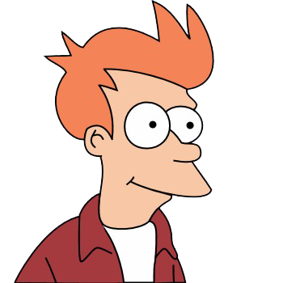
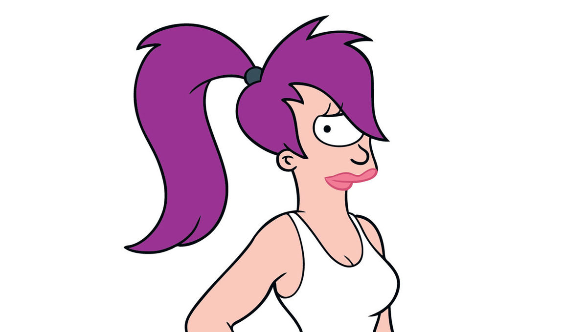
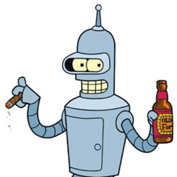
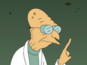
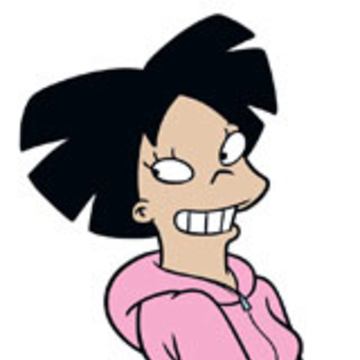
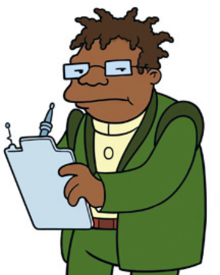
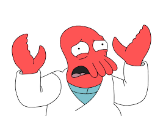
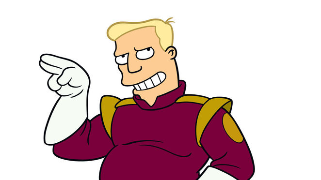
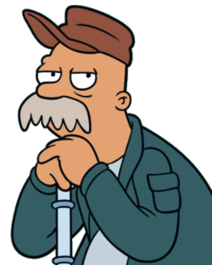

Futurama es una serie animada creada por Matt Groening, creador de la popular serie humorística Los Simpson. Fue producida por Matt Groening y David X. Cohen para la cadena Fox y Comedy Central. La serie sigue las aventuras de un repartidor de pizza, Philip Fry, que el 31 de diciembre de 1999 tropieza accidentalmente y cae por casualidad en una cápsula criogénica y despierta mil años después. En Estados Unidos la serie comenzó a emitirse por Fox desde el 28 de marzo de 1999 hasta su cancelación el 10 de agosto de 2003. Posteriormente, fue renovada por Comedy Central y se emitió en ese canal desde 2008 hasta 2013, cuando se emitió el último episodio, titulado «Meanwhile»
Futurama también se emitió en Adult Swim dentro de Cartoon Network entre enero de 2003 y diciembre de 2007, cuando la licencia de dicho canal expiró. Regresó en 2007 con la salida de cuatro episodios largos en DVD, los cuales se dividieron en 16 episodios para formar parte de la quinta temporada. Comedy Central mantuvo un acuerdo con 20th Century Fox para emitir todos los episodios largos con un formato episódico.23 Futurama se retransmite en Comedy Central desde enero de 2008.4 Tras el éxito de ventas de los DVD y gracias al apoyo de los admiradores, los creadores de la serie prepararon su regreso en junio de 2010, esta vez, en Comedy Central, haciendo llegar a esta cadena a récords de audiencia históricos. El nombre "Futurama" proviene de la exhibición del año 1939, Feria "Mundial" de Nueva York, diseñada por Norman Bel Geddes. La exhibición mostraba el mundo de 30 años en el futuro.
| Personajes | ||
|---|---|---|
|  |  |  |
|  |  |  |
|  |  |  |